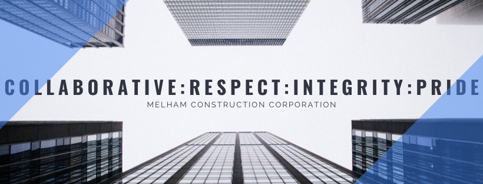
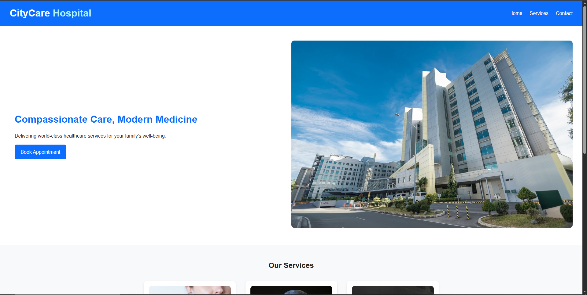
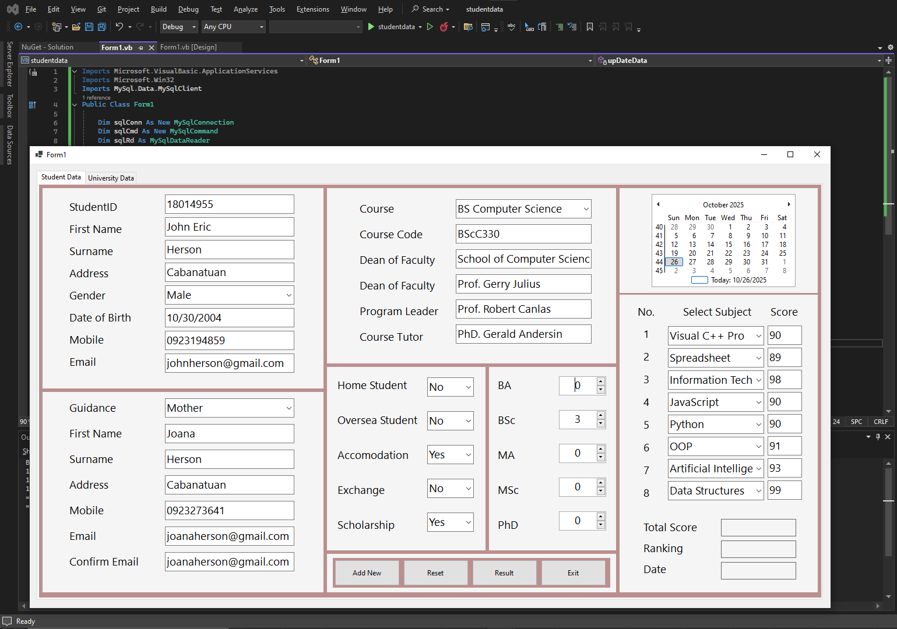

My Works

Website Maintenance Project
Assisted in maintaining and updating company website content at Melhalm Construction Corporation during internship (06/2022 - 08/2022). Reviewed web pages for design enhancements, ensured brand consistency, and coordinated remote revisions.

Web Development Projects
Completed hands-on projects in web development during Computer Science studies, including responsive websites using HTML, CSS, and basic JavaScript. Focused on user experience, layout consistency, and mobile optimization.

Software Engineering Projects
Developed software projects using VB.NET, Java, and Python, including algorithms, data structures, and database systems. Practiced problem-solving, debugging, and collaborative development in academic settings.